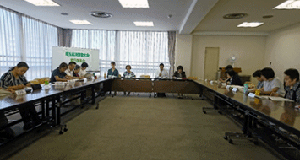

|
|
9月19日（水）13時30分より、市民会館うらわ7階会議室にて、第6回実行委員会を開催、17団体25人と事務局3人が出席しました。 【議題】  1．実行委員長・事務局長から 2．第5回実行委員会報告 3．埼玉県への要請項目について論議 消費者課題、食に関する課題、社会保障に関わる課題、平和をめぐる課題、くらし全般をめぐる課題の5つのテーマで、44の要請事項を確認し、3項目については事務局一任。 4．大会アピール（案）について論議 5．大会当日に向けた確認事項について ●参加人数、登壇者について ●お弁当注文について ●大会当日の実行委員会集合時間、登壇者の集合時間について 6．各団体の分科会担当、分科会の内容について 4つの分科会にわかれて、当日のすすめ方、役割分担について話し合い。 7．実行委員会終了後、大会のPRのためマスコミ支局訪問 訪問先は、毎日新聞、東京新聞、共同通信社、テレビ埼玉、NHKの5社。 |